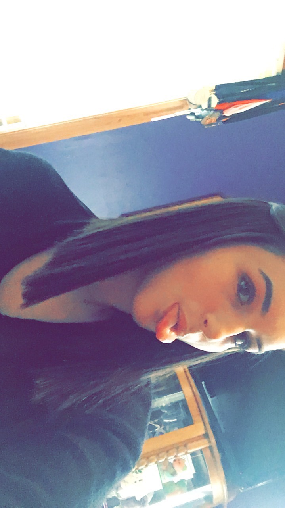

Home
Who am I?
My name is Megan Bayer and I am a senior Computer Science major at Siena College. I am 21 years old and I grew up in the town Middletown, NY. My home town is about 2 hours away from Siena.
I have three brothers and no sisters. My brothers names are Joe, Michael, and Will. I also have a dog named Sammy and a cat named Gizmo. The cat and dog are basically the same size so they fight a lot.
After college, I want to return home and enter the work force. I may go into information technology to start, but I know that eventually I want to return to school to get my PhD in computer science. I like the idea of one day being a college professor.
Here's a picture of me!
